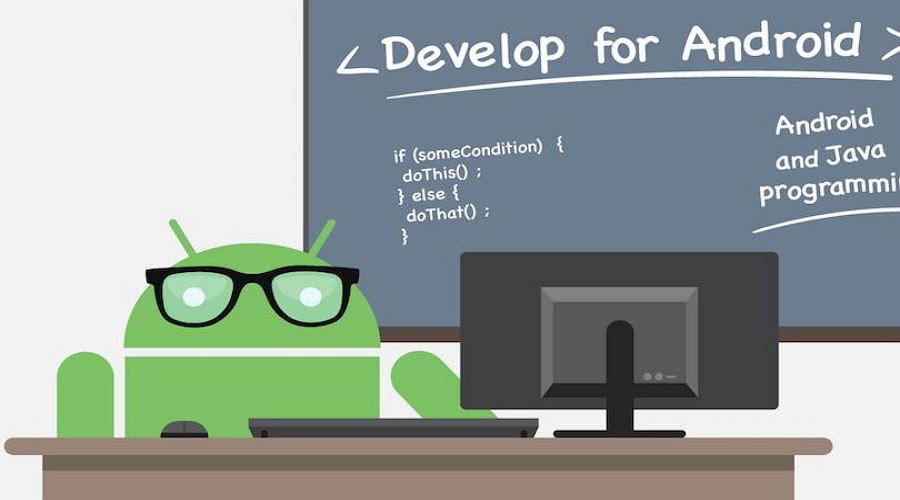

Kotlin Multiplatform (KMP)
The sane approach to sharing code
Me in 2013
Job for a consumer App
Written in different languages
Different architectures
3 separate teams
Each with their own set of bugs

So what ways are there?
React Native

Written in Javascript/Typescript
Share business logic
Write native and web components separately
Kotlin/Swift developers are not fans of Javascript❌
Flutter
Written in Dart
Same components for every platform
Best for green field projects
Different language than every platformüôÉ
Kotlin Multiplatform

Business logic in Kotlin compiles to each platform
Interop with common code from native
Kotlin helps increase productivity and increase developer satisfactionü•∞